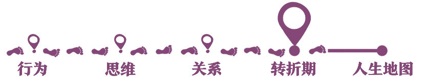
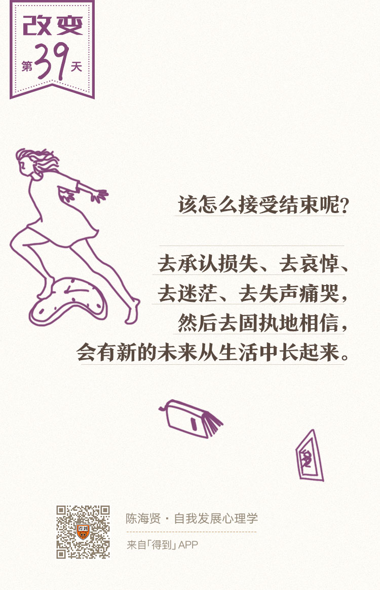

39丨关系转变：如何处理关系中的失去？

欢迎来到《自我发展心理学》。
你好，我是陈海贤。
上一讲，我们聊了工作的转变，这一讲，我们来聊聊另一种重要的转变——关系的转变。
在第三章“关系的发展”里，我曾讲过，关系是幸福感和意义感的来源，关系里有我们的喜怒哀乐、爱恨情仇。也因此，关系的转变会带来巨大的情感冲击。
关系的转变中，最痛苦的就是关系的结束。
所以，这一讲我们就来聊聊，怎么应对关系的结束。
结束是一种特殊形式的死亡
失恋、离婚，或者亲爱的人离我们而去，总会给我们带来巨大的痛苦。
自我是以关系为载体的，所以，当我们结束一段关系的时候，我们不仅失去了关系中的他，也失去了关系中的那个自我。
如果你曾对她温柔体贴百般呵护，那在重新建立一段新关系之前，那个温柔体贴百般呵护的你也随着这段关系消失不见了。这也是为什么，人们总是把关系的结束，与死亡相类比。
结束就是一种特殊形式的死亡。它伴随着不可逆的失去，这种失去会给我们带来巨大的情感冲击，让我们很难看到重生的可能。
失去了一段关系，意味着你失去了一个自我。这种失去又不像从一块完整的饼里掰下一个块那么简单，它同时会改变剩余的部分。
因为，当这段关系在的时候，你会给这段关系赋予很多的意义。
你也许会想，自己是被缘分眷顾，才有两人的相遇。你很有才华或魅力，才会吸引到她，这些都变成了你自我概念的一部分。可是，随着关系的结束，你这部分跟这段关系有关的自我概念，也不得不重新修改了。
有人说，从爱一个人到不爱一个人，就好像原来那个人浑身上下都被光笼罩着，现在，这个光没了。
原来在一段关系里，你自己和对方都是闪闪发光的。现在光没了，你要怎么重新看待自己，重新看待这段关系呢？
原先神奇的缘分会变成命运的恶作剧吗？
原先的魅力会变成“我就是这么容易被骗”“没有人会真的爱我”的证据吗？
所以哪怕已经分手的恋人，也还要问一句，“你到底有没有爱过我”，这个问题的答案是很重要的。
虽然它改变不了分手本身，但对分手以后他会怎么看待自己、看待两人的关系却至关重要。
在关系转变的过程中，我们的头脑会变得非常混乱。
也许前一秒你还在想：无论是不是离开，我都会爱你一辈子，我永远都忘不了你。后一秒你就会想：你怎么能这么冷酷无情，像你这种人渣，我这辈子都不想再见你了。
前一秒你还在想：虽然要离开，但是我很感谢上天让我们相遇。后一秒也许你就会想：我是做了什么孽，上天要这样惩罚我。
当这些混乱的想法来临的时候，你要知道，这不是你疯了，而是大脑在艰难地处理这段失去，从中整理出关于关系和自我的新认识。
抗拒结束的三种方式
和其他的转变一样，关系的转变也会经历结束——迷茫——重生这三个阶段。在结束的阶段，我们的头脑会以各种方式来抗拒结束。
在这里，我想说说三种典型的方式。
第一种拒绝结束的方式，是对挽回的幻想。
经常有来访者因为失恋来找我。他们跟我说完他们的各种痛苦之后，就会翻出对方的微博、微信的聊天记录。我知道，这是因为他们希望我来判断他们是不是还有可能在一起。
这时候我会说：“不好意思，我并不擅长通过这些来判断一个人，我不会比你更了解他。”
他们就会说：“你不是学心理学的吗？怎么会不知道呢？”
有些人会直接问：“那你能不能告诉我，我能做什么来挽回这段关系呢？”
我只好说：“我也不知道。在一起需要两个人做决定，可是离开，只要一个人就可以决定了。如果对方真的决定了离开，那你做什么，都是没有用的。”
这是在关系里，我们很难接受的一个事实。
如果你是被离开的一方，那这段关系是不是结束，并不是你来决定的。如果对方去意已决，你再做任何事，都不能帮你挽回这段关系，只会增加对方的负担。
当然我也并不是说一分手，就没有复合的可能了。我只是说，复合不复合，不再是一件你能决定的事了。而现在，你只能去忍受这种不确定性了。
第二种拒绝结束的形式，是把对方和关系理想化。
其实一段关系逐渐走向结束，一定是有原因的，如果两个人真的不合适，那结束也未必不是好的选择。
可是在有些时候，出于对失去的恐惧，这段失去的关系在你的头脑里又变得光芒四射起来，对方也忽然变得异常理想，以至于你会不停哀叹：没有把握好这段关系，我再也找不到一个像他那么好的人了。
这其实是大脑玩的把戏。它在用这样的方式督促你去挽回这段关系，以避免结束。这会让你没法客观地看待这段关系，从而增加了结束的痛苦。
我有一个来访者，老公接二连三地出轨，还经常不回家。两个人陷入了很长一段时间的争吵和猜忌。到后来，她实在忍无可忍，选择了分手。
可是离婚以后，她却不停谴责自己，觉得是自己没处理好，才把事情搞砸了。哪怕我一再跟她说，这并不是她的错，也无济于事。
后来我才慢慢理解，她像是一个记忆的剪辑师，把关系中所有好的片段都剪辑下来，拼接成了一段完美的关系，而把关系里那些背叛、伤害都排除了。
这种理想化为我们保留了关系的美好，同时也增加了结束的困难。
所以，如果你正结束一段关系，你也可以提醒自己：你所失去的，并不是一段完美的关系，无论你把它想得多美好，它都不是。
如果这段关系本身已经充满了厌倦和冲突，其实谁提出的结束，并不重要。
第三种拒绝结束的形式，是让自己沉浸在悲伤的情绪中。
情绪是有对象的，悲伤虽然不好受，但它也是一种联系的方式。
我有个来访者，和前男友分开快三年了。每天上班的第一件事，仍然是打开前男友的微博，看看他在做什么，固定得像一个仪式。
前男友的微博里会有老婆孩子的照片，会有现在的生活，当然不会有她的痕迹了。每当看到这些，她都会黯然神伤。
我一直不明白，她为什么非要用这种方式让自己悲伤。直到有一天她跟我说：
“我在前男友那边已经找不到感情的痕迹了。如果我还悲伤着，说明这段感情还在。如果我也好了，那这段感情就真的结束了。”
她宁可让自己悲伤，也不愿去承担结束的痛苦。因为后一种痛苦，要疼得多。
我听到另一个姑娘跟我说过类似的话。她说：
“失恋了。但我却不想结束，不想从痛苦中走出来，觉得结束像是一种背叛，哪怕痛苦也宁愿留在过去。”
停留在过去有什么好处呢？
大概是，它还会在我们的心里生起一些虚幻的希望，我们借由它来对抗孤独。而承认了结束，就是从心底承认我们已经永远失去了所爱的人。
可是，就像我们在前面所讲的，如果不经历结束和迷茫，你又怎么能迎来关系里的重生呢？
如何接受结束？
那最终，我们是怎么接受这种失去的呢？
心理学家库伯勒·罗斯（Kübler-Ross model）曾经研究过一些重症患者的心理。她说，这些重症的患者接受自己生病要经历五个阶段。
其实，这五个阶段也适用于接受像分手这类关系的结束。
第一个阶段，是否定。我们不相信关系真的会结束，还以为只是跟过去一样吵架而已。
第二个阶段，是愤怒。觉得自己被欺骗、被抛弃了，哀叹为什么是我们遇到这样的事。我们会不停地指责对方，就好像对方不仅没有永久地离开，还会回来接受我们的指责一样。
第三个阶段，是讨价还价。想着也许对方会改变，也许我们可以等待，也许我们还有机会在一起。
第四个阶段，是抑郁。这就是我们在前面所讲的迷茫期。
第五个阶段，我们的心才会慢慢重归平静。
我喜欢的一个日本电影《情书》，讲的正是关于怎么接受结束的故事。
电影里的女主角博子一直走不出未婚夫登山去世的阴影。故事的结尾，博子的新男友带着她，去了她未婚夫遇难的雪山。哪怕在山脚下，博子还拉着新男友的手不安地说：
“这太过分了，我们会惊扰到他的，我要回去。”
可是那天早晨，当博子看着远处圣洁又安宁的雪山，压抑已久的悲伤终于痛快地释放了出来。她跑向雪山，对着雪山一遍遍大喊“我很好，你好吗？”泪流满面。
那一刻，她终于愿意去直面逝去的悲伤。而她的新男友，就在雪山这边，微笑地看着她。雪山那边的结束，和雪山这边的开始，生活在让人心碎、又带着奇怪安宁的悲伤中，滚滚向前。
所以，该怎么接受结束呢？
去承认损失、去哀悼、去迷茫、去失声痛哭，然后去固执地相信，会有新的未来从生活中长起来，哪怕我们现在还看不到这个未来。
这一讲，我们谈了一个略有些忧伤的话题，关系的结束。我们谈了拒绝结束的三种形式，以及如何接受结束。
最后，我想说说我对结束的看法。
我们很容易对结束有这样的误解，以为结束了，就是没了，是这个人在我们的生活中从此消失不见了。
也许确实，一段关系的结束意味着你再也见不到它了，但是结束也并不意味着消失。关系会一直存在。只不过，以前是我们存在于这段关系中，现在，是这段关系存在于我们心中。
当你从失去的关系中重生以后，你就重新获得了这段关系，在你对往事的回忆里，它变成了你内心柔软的角落。
下节课我们会讲讲，在转折区经常会遇到的难题——怎么做选择？
我们下节课见。
